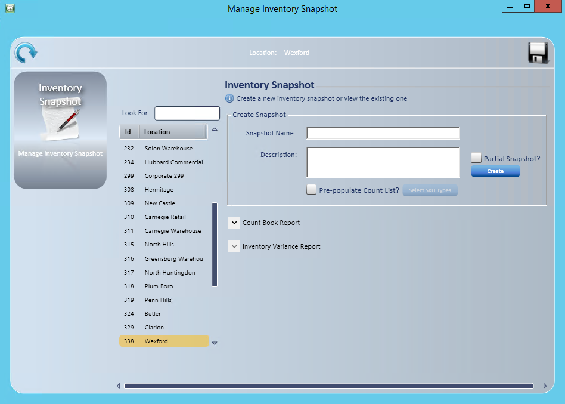
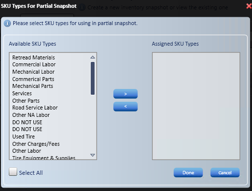
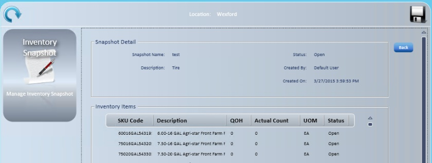
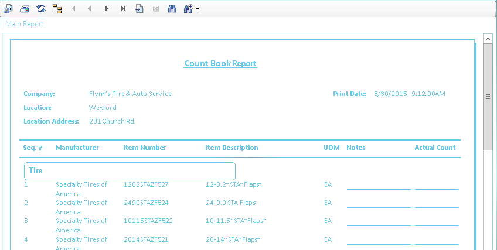

Physical Inventory Count
Use Physical Inventory Count to take a snapshot of current inventory, print a count book for a manual count or scan inventory, run a variance report, and create and process the inventory adjustment automatically.
- Go to Manage; Inventory; Advance Physical Inventory Count; Inventory Snapshot.

Create an inventory snapshot
- Select the store in the location list.
- Only stores where you have the Adv. Inv. Count - Inventory Snapshot access right are listed.

- Enter a Snapshot Name, such as the store number and date.
- To snapshot only specific SKU types, check Partial Snapshot? and select the SKU types.
- Select types in Available SKU Types and select
 .
.
- Hold CTRL to select several.
- Hold SHIFT to select a range.
- Select Done.
- Select types in Available SKU Types and select
- Check Pre-populate Count List? if you want. Counts fill in only for items with a quantity on hand. If you leave it unchecked, counts start blank.
- Select SKU Types .
- Select types in Available SKU Types and select .
- Hold CTRL to select several.
- Hold SHIFT to select a range.
- Select Done.
- Select types in Available SKU Types and select
- Select .
- The snapshot list displays automatically.

- Select Back to return to the Inventory Snapshot screen.
After the snapshot is saved, more options display:
 : Discards the snapshot.
: Discards the snapshot. : Processes the inventory adjustment.
: Processes the inventory adjustment.
Option 1: Print manual count sheets
- Select
 .
. - Enter filter information and sort orders if you want.

-
- Is Stocked?: This is the not inventoried check box.
- QOH for the Item >0: Makes the list shorter, but may mean more items written in by hand that would have been on the list if you left it unchecked.
- Items sold/ordered within the past XX month(s)
- Set sort orders by SKU type.
- One icon deletes a sort item from the list.
- One icon changes the sort order.
- Check For All Other Sku Types if not all SKU types are listed.
- Select to add sort items.
- Use to move SKU types into the order you want.
- Select Print.

- Select Print in the report window.
Option 2: Use count lists
- Go to Manage; Inventory; Advance Physical Inventory Count; Inventory Count Lists.
- Enter a Name and Description, and select Create CountList.
- Open the count list and enter each item's Actual Count.
- A blank count is skipped. A 0 is counted and included in the variance.
- Select Save to keep working later, or Submit when the count list is done.
Process the snapshot
- On the Inventory Snapshot screen, select the snapshot and print the Inventory Variance Report.
- Select Process.
- You must print the variance report first.
- You must submit or delete every count list first.
- Processing updates quantity on hand and inventory valuation for the store.
Note: The QOH column in the snapshot's Inventory Items list shows only for users with the Adv. Inv. Count - Inventory Snapshot – QOH access right.
Note: To print a Physical Inventory Count Report for All Items or selected inventory tree branches without creating a snapshot, go to Manage; Inventory; Physical Inventory Count.